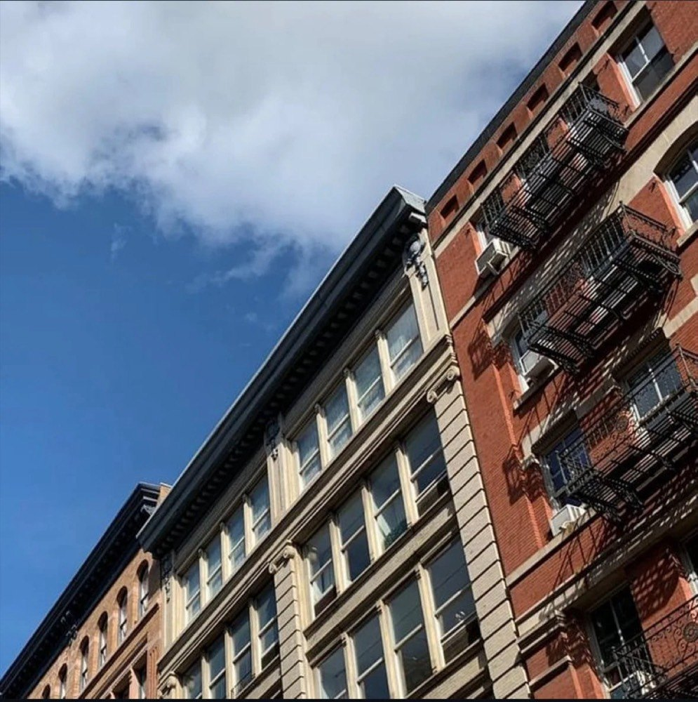
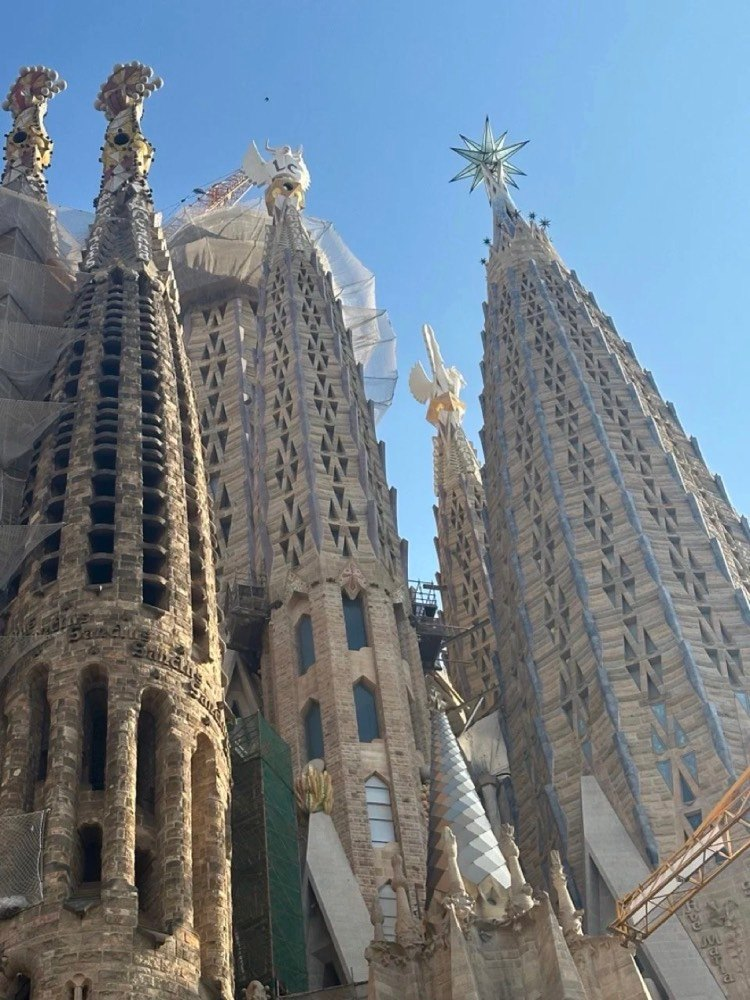
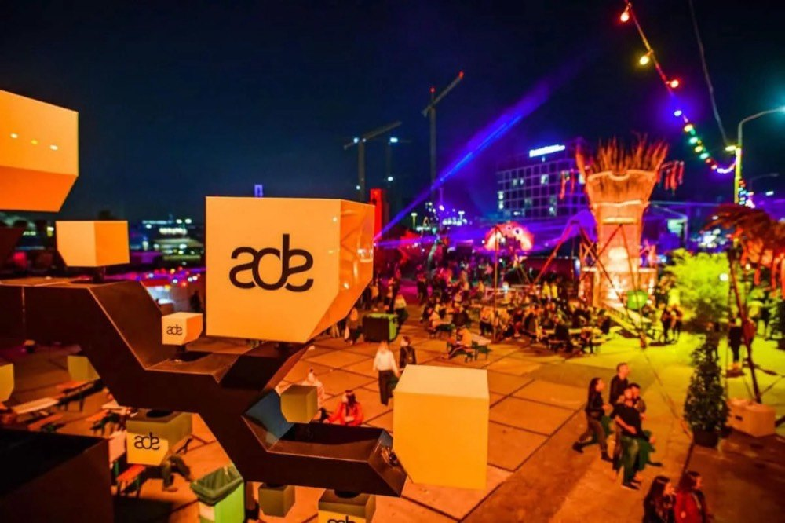
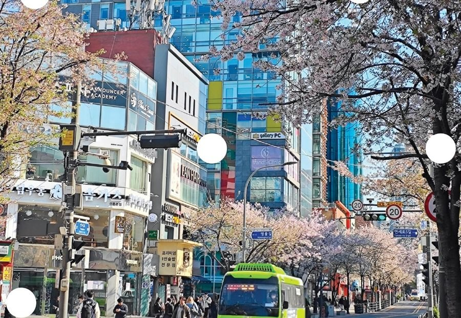
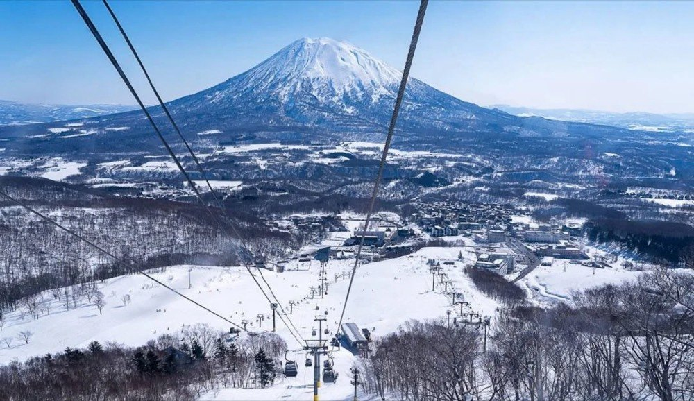
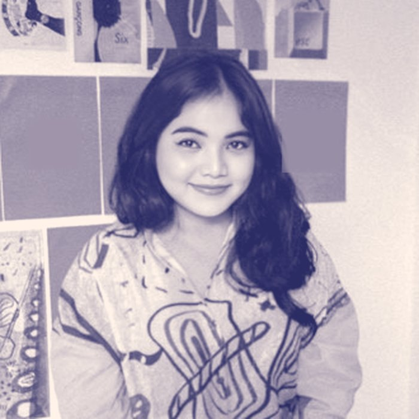
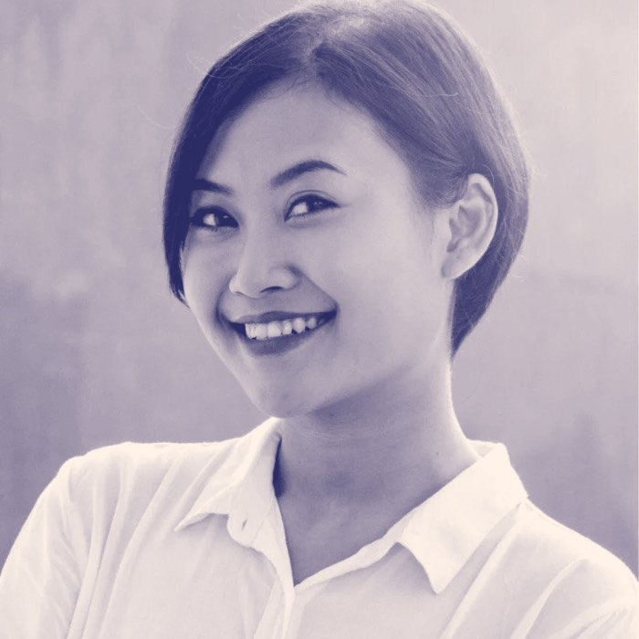

Music Festival
ADE 2022–2026
Amsterdam, Netherlands · every October
Five days and five nights when the city never sleeps: more than 1,000 events in nearly 200 locations. DAYS has taken a group every year since 2022, five editions running.
Media perjalanan berbasis pengalaman dan penghubung global antara Indonesia dan Eropa.
DAYS is a Jakarta travel company that plans journeys around the reason you want to go: a festival, a race weekend, a city, a view or a long lunch. We handle the details, including visas and passports, and leave room for the moments that make a trip yours.
One brand. Five ways to go.



Who we are
Perjalanan dengan karakter.
Exploring travel, culture, and the days worth talking about. DAYS plans premium, approachable journeys for Indonesian travelers aged 25–55. Every trip is designed around interests, thoughtful choices and the people you travel with.
Our voice is curious, warm, confident and considered: specific, useful language from people who have been there first.
Keluarga, teman, solo traveler, dan grup. Gaya perjalanan boleh berbeda; perhatian terhadap pengalaman tetap sama.
Our promise: make it feel personal, make the details clear, and leave room for the unexpected moments that make a trip yours.
5×
Amsterdam Dance Event, every year 2022–2026
1,000+
visa applications processed since 2024
97–98%
visa approval rate
2018
handling visas and travel since
Why book with DAYS
“We are not just agents; we’ve tested and vetted every aspect of the cities we suggest.”
Our team has years of experience managing visa applications and has personally explored the destinations we recommend, so every suggestion comes from first-hand knowledge rather than a brochure.
Indonesia ↔ Europe
ADE 2026 Asia Hub panel, Amsterdam. Sabrina Moelyono spoke on “Connecting the Dots”, on regional scenes and touring across South Korea, Thailand and Indonesia (22 October 2026).
Nusantara Elsewhere, Jakarta. A pre-event talk leading up to the ADE 2026 departure, bringing Jakarta’s scene into the conversation.
Brand architecture
Satu DAYS, lima cara berangkat. The wordmark stays constant; the color and collection name tell travelers what kind of trip it is.
Every trip gets one primary collection, chosen by its main motivation. Other experiences on the itinerary appear as supporting interests.
| The trip | Leading collection | Why |
|---|---|---|
| Skiing, surfing or a hiking-focused trip | Sports | The activity is the reason to travel. |
| A mountain or coastal scenery escape | Nature | The landscape and slower discovery lead. |
| A festival trip with restaurants and sightseeing | Music Festival | Music is the anchor; City and Culinary are secondary. |
| A food-led city break or a spa retreat | Culinary, Leisure & Wellbeing | Food, rest or restoration shapes the itinerary. |
| A city break that includes one concert | City | The city experience remains the main draw. |
A city.
Your pace.
Collection · City
For travelers who follow their curiosity through neighborhoods, culture and the city after dark.
Untuk penjelajah yang ingin mengenal sudut kota, budaya lokal, dan suasana selepas senja.
Room to
breathe.
Collection · Nature
For journeys where the landscape is the reason to go, with time to appreciate the view.
Untuk perjalanan yang menjadikan keindahan alam sebagai tujuan utama, dengan waktu untuk menikmatinya.
Be there.
Be part of it.
Collection · Sports
For the thrill of being in the crowd or taking part: iconic events and active escapes.
Untuk merasakan semangat dari tribun maupun ikut beraksi lewat perjalanan aktif.
Take your
time.
Collection · Culinary, Leisure & Wellbeing
For good food, unhurried stays and time to feel restored. Discovery with a gentler pace.
Untuk menikmati kuliner, bersantai, dan kembali segar. Menemukan hal baru dengan ritme yang lebih tenang.
Follow
the sound.
Collection · Music Festival
For journeys shaped by music, from the first set to the last shared memory.
Untuk perjalanan yang mengikuti irama musik, dari penampilan pertama hingga kenangan yang dibawa pulang.
Services
Dari ide perjalanan sampai urusan dokumen.
Music Festival
Journeys to the world’s most iconic festivals, from high-energy dance events to laid-back classical programs.
Culinary, Leisure & Wellbeing
Gourmet experiences paired with unhurried downtime, tailored to your taste.
Any collection
Bespoke plans for adventures, cultural immersion or a simple getaway. Our travel expert handles everything from A to Z.
Every trip
Guidance through every step of the visa application and passport renewal, so your documents are in order and you can focus on the trip.
Schengen Area
~15 working days
Typical visa processing time
Australia
48 hours – 3 months
Typical visa processing time
Good to know
Processing times vary by embassy or consular service and can lengthen in high season. We plan applications around your departure date.
Step 1
We match your trip to one leading collection, then add the interests around it.
Step 2
Stays, activities, transfers and reservations, with room for rest and personal preferences.
Step 3
Visa applications and passport renewals are timed to your departure.
Step 4
A bilingual A4 itinerary: cover, day-by-day plan and a useful-details page with confirmed bookings and meeting points.
Selected open trips
Open trips combine flexibility with curated experiences, and travelers join as a group.
Amsterdam, Netherlands · every October
Five days and five nights when the city never sleeps: more than 1,000 events in nearly 200 locations. DAYS has taken a group every year since 2022, five editions running.

Seoul, South Korea · 5 days 4 nights
A girls trip to Seoul: shopping in Seongsu-dong and Hannam-dong, cafés worth the queue, a facial and skin consultation, and good food every night.

Niseko, Japan · Dec 2024 – Feb 2025
Led by an avid skier who has arranged snow trips in Japan since 2018. Open to all ski levels.
Travel journal
Destinations told through the people, sounds and craft that shape them.
Trusted by
Companies and institutions whose teams we’ve handled visas and travel for.
Team
The people behind DAYS.


Get in touch
Yuk, rencanakan perjalananmu.